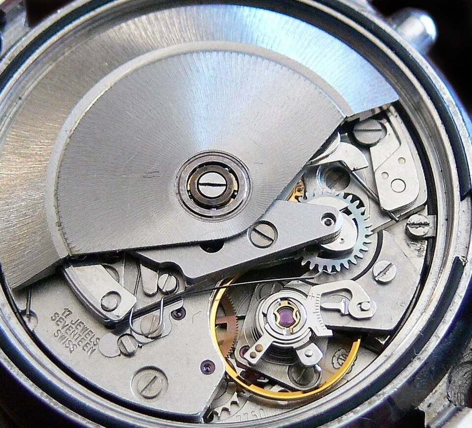

1. Geschichte des Automatischen Aufzugs
- 1770 — Die Anfänge (Schüttel- und Taschen-Perpetuelluhren): Initiiert vom Uhrmachermeister Abraham-Louis Perrelet, später weiterentwickelt von Hubert Sarton, Abraham-Louis Breguet und den Brüdern Berthoud. Damals erfolgte der Aufzug von Taschenuhren mit Hilfe eines Aufzugsschlüssels.
- 1845 — Erfindung der Krone: Entwicklung des kombinierten Systems für Handaufzug und Zeiteinstellung ohne Schlüssel.
- 1923 — 1. Automatische Armbanduhr (John Harwood): Verwendung einer Schwungmasse mit begrenzter Rotation (an Anschlägen / Hammerautomat). Hauptnachteil: Mikroschrauben lösten sich durch wiederholte Stöße. Die Zeiteinstellung erfolgte damals durch Drehen der Lünette.
- 1926 — Movado Ermeto: Einführung des genialen Systems mit Schiebegehäuse, bei dem jede Öffnungs- und Schließbewegung die Zugfeder spannt.
📷 ORIGINALER HANDSCHRIFTLICHER ZETTEL (01-54) — Geschichte & Mechanismus-Typen
2. Typen von automatischen Aufzugsmechanismen
- 1. Zentralrotor (Hängende Schwungmasse):
- Großer Rotationsdurchmesser garantiert ein hohes Aufzugsdrehmoment.
- Modulares Zusatzaggregat: einfache Konstruktion und anpassbar an ein mechanisches Basiswerk.
- Traditionelle Positionierung auf der Brückenseite.
- 2. Exzentrischer Rotor (Mikrorotor / Integrierter Mechanismus):
- Emblematisches Beispiel: das prestigeträchtige Kaliber Patek Philippe 240.
- Vollständig in die Dicke von Platine und Brücken eingelassener und integrierter Mechanismus.
- Schwungmasse geprägt aus 22K Gold (schweres und edles Material), um Gewicht und Trägheit bei begrenztem Durchmesser zu maximieren.
- Ideale Architektur für ultraflache Uhren: Die Masse fügt keine axiale Überdicke hinzu und lässt die Schönheit des Werks bewundern.

📷 WERKSTATT-ANSICHT — Automatikwerk mit zentraler Schwungmasse auf Kugellager und Aufzugsräderwerk.
3. Bauteile: Die Schwungmasse (Werkstoffe & Befestigung)
| Struktur | Material | Spezifitäten & Werkstattvorgaben |
|---|
| A) Monometallisch |
22K Gold oder gesintertes Wolfram |
• 22K Gold: Dem absoluten High-End vorbehalten.
• Wolfram: Schwer und dicht, aber starrer/spröder. |
B) Bimetallisch
(Industriestandard) |
Zentrum aus Messing + Äußeres Segment aus Wolfram |
• Im Zentrum (Messing): Flexibel und leicht zu bearbeiten.
• Außen (Wolfram): Schwerer, nach außen versetzter Kranz zur Maximierung der Trägheit. |
🔩 Befestigung: Die Montage erfolgt durch mechanisches Verstemmen, technisches Verschrauben/Kleben oder Präzisionsschweißen.
4. Die Wendelräder: Das kinematische Herz des Aufzugs
Die Schwungmasse bewegt sich frei in beide Rotationsrichtungen. Die Zugfeder kann jedoch nur in einer einzigen Richtung aufgezogen werden. Das Wendelrad (Inverses-System) ist der Mechanismus, der diese bidirektionale Bewegung gleichrichtet.
5. Typologie und Rolle der Wendelräder
Sie sind über 10 Millionen Beanspruchungen pro Jahr ausgesetzt und müssen mit minimaler Reibung arbeiten.
- Unidirektionales System (1 Wendelrad): Die Masse treibt das Räderwerk nur in eine Richtung an. In die andere dreht sie leer. Beispiel: ETA 7750.
- Bidirektionales System (2 Wendelräder): Die Masse zieht die Feder unabhängig von ihrer Drehrichtung auf. Beispiel: ETA 2824-2.
🚴♂️ Werkstatt-Analogie (Fahrrad mit Allradantrieb):
Wenn der Rotor in eine Richtung dreht, greift ein Wendelrad ein und das andere schaltet auf Freilauf. Kehrt der Rotor seine Richtung um, kehren sich die Rollen um. Nur ein Wendelrad arbeitet gleichzeitig, wodurch die direkten Beanspruchungen halbiert werden.
📷 ORIGINALER HANDSCHRIFTLICHER ZETTEL — Wendelräder & Mobile
6. Das Reduktionsgetriebe (Untersetzung)
- Das Prinzip: Die Rotationsgeschwindigkeit wird reduziert, um eine proportionale Erhöhung des Aufzugsdrehmoments zu erreichen.
- Das Untersetzungsverhältnis (1/150): Es sind im Durchschnitt 150 volle Umdrehungen der Schwungmasse erforderlich, damit die Federhauswelle 1 einzige Umdrehung ausführt.
7. Automatik-Gestell & Manueller Freilauf
Das "Automatik-Gestell" ist das strukturelle Modul (Brücken), welches die Wendelräder und das Reduktionsgetriebe umschließt. Es handelt sich oft um ein zusätzliches, auf das Basiswerk aufgesetztes Modul.
Ein Sicherheitssystem trennt die beiden Aufzugsquellen voneinander:
- Automatisch: Die Energie geht zum Sperrrad, ohne die Krone am Handgelenk mitzudrehen.
- Manuell: Die Kraft wird an den Wendelrädern "entkoppelt", damit sich die Schwungmasse nicht mit sehr hoher Geschwindigkeit dreht.
8. Überspannungssicherung: Die Gleitfeder (Zaum)
Um ein Reißen der Feder zu verhindern, wenn am Handgelenk die maximale Spannung erreicht ist, wird die Gleitfeder verwendet.
- Funktionsweise: Es handelt sich um eine am äußeren Ende der Zugfeder befestigte Blattfeder, die gegen die Innenwand der Federhaustrommel drückt.
- Das Gleiten (Klick-Klick): Die Trommelwand weist Aussparungen auf, die mit schwarzem Graphitfett bestrichen sind. Sobald die maximale Spannung erreicht ist, "gleitet" die Feder, indem sie von Mulde zu Mulde springt, und baut so die Überspannung ab.
📷 ORIGINALER HANDSCHRIFTLICHER ZETTEL — Automatik-Gestell & Gleitfeder